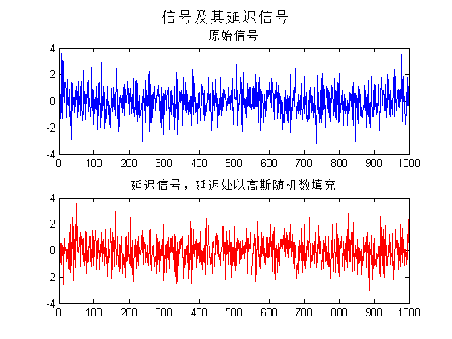
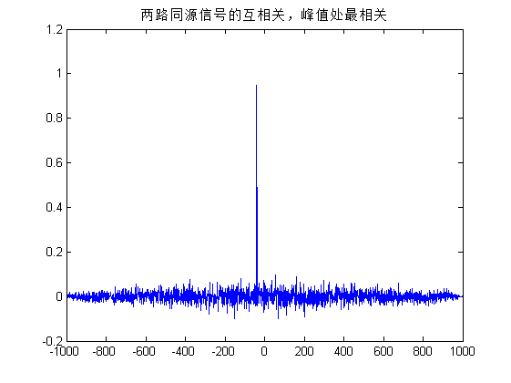
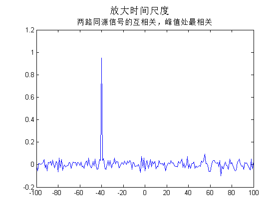

实验 I 之5 时间延迟估计计算机仿真
Contents
实验 I 之5 时间延迟估计计算机仿真
%2016.10.31
准备环境
clear all close all % clf clc
生成单路信号
num =1000; lag = 40; s = randn(1,num); disp(['预设两路信号延迟为：',num2str(lag),'点。'])
预设两路信号延迟为：40点。
延迟lag点
% %1:补零 % sLag = [zeros(1,lag) s]; % disp(['信号延迟处以0填充'])
%2：补随机高斯数 sLag = [randn(1,lag) s]; sLag(end-lag+1:end) = []; disp(['信号延迟处以高斯随机数填充'])
信号延迟处以高斯随机数填充
显示两路同源信号
subplot(2,1,1);plot(s) title('原始信号') hold on subplot(2,1,2);plot(sLag,'r') % title('延迟信号，延迟处以0填充'); title('延迟信号，延迟处以高斯随机数填充'); suptitle('信号及其延迟信号')
画出两路同源信号互相关
[x,lags]=xcorr(s,sLag,'coeff'); figure;plot(lags,x) title('两路同源信号的互相关，峰值处最相关');
搜索互相关峰值得延迟点数
[mx,indx] = max (x); TLag = abs(num - indx); disp(['经计算相关函数，估计延迟点数为：',num2str(TLag),'。'])
经计算相关函数，估计延迟点数为：40。
搜索互相关峰值得延迟点数，放大时间尺度
a bit more clearly
[x,lags]=xcorr(s,sLag,100,'coeff'); figure;plot(lags,x) title('两路同源信号的互相关，峰值处最相关'); suptitle('放大时间尺度')